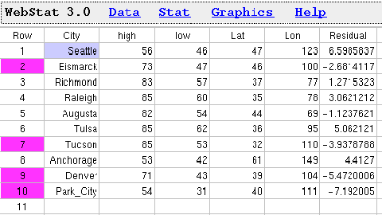
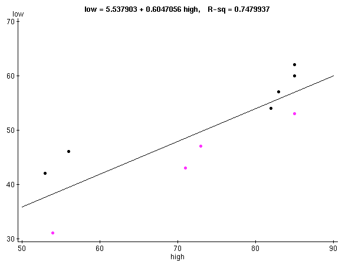
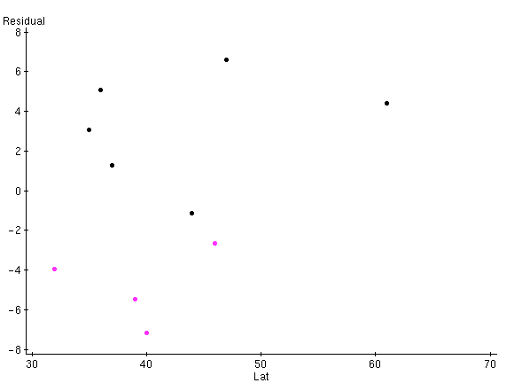
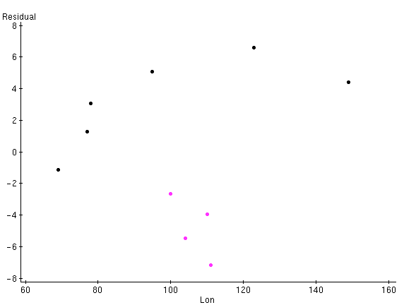

Stat 2000, Homework 6, Question 1 d) - Solution
Residuals for Lurking Variables:
There are many places on the Web that allow us to find some
lurking variables, e.g.,
http://geonames.usgs.gov/pls/gnis/web_query.gnis_web_query_form
Type in the city of interest under "Feature Name", select the
"State or Territory", and click on "Send Query". This gives
us the exact location (in latitude and longitude) of many places
in the selected city. You can access the extended data set at
http://www.math.usu.edu/~symanzik/teaching/2002_stat2000/hw05_weather_loc.dat
Import this data into WebStat, construct the regression line,
and plot the residuals versus Lat and Lon.
Decide yourself whether there is a (geographic) pattern of the Residuals
with respect to Lat and Lon (negative values for the residuals have
been brushed - these relate to cities in the central US). However,
with only 8 data points, some patterns will occur just by chance!
Here are the results:

Simple linear regression results:
Dependent Variable:low
Independent Variable:high
Sample size: 10
Correlation coefficient: 0.8649
Estimate of sigma: 5.0653124
| Parameter |
Estimate |
Std. Err. |
DF |
T-Stat |
P-Value |
| Intercept |
5.537903 |
9.16283 |
8 |
0.6043878 |
0.2812 |
| high |
0.6047056 |
0.1240954 |
8 |
4.872909 |
0.0006 |


